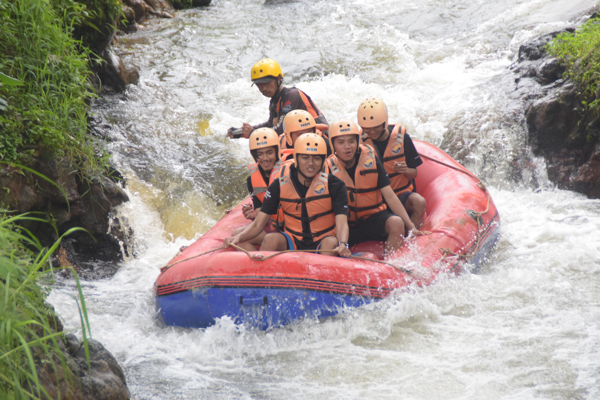
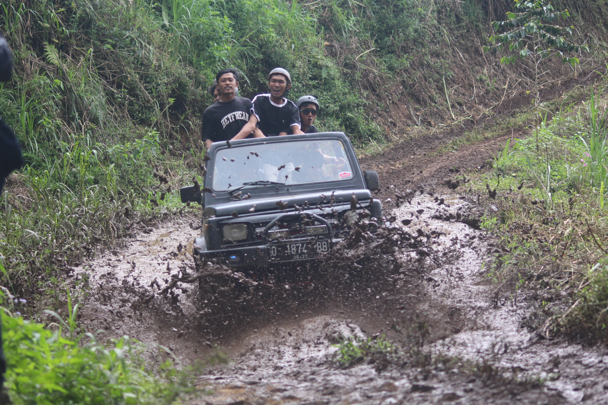

Team ARUNIKA
Updated 2026
Single Post River Guide
Petualangan & Eksplorasi Sungai
Loading deskripsi sungai...
Karakteristik & Tantangan Jeram
Jalur arung jeram ini menyajikan kombinasi medan arus deras, kelokan tajam, dan tebing alam yang indah. Dipandu oleh skipper berpengalaman yang akan menjamin keamanan Anda sepanjang pengarungan.
Keunggulan Utama Destinasi Ini
- Pemandangan tebing alami dan batuan vulkanik
- Air sungai yang segar dan jernih langsung dari pegunungan
- Jeram menantang yang cocok untuk menguji kekompakan tim
Dokumentasi Petualangan


Siap Menaklukkan Arus Sungai Ini?
Pesan paket arung jeram Anda sekarang bersama ARUNIKA Rafting dan dapatkan pengalaman terbaik!